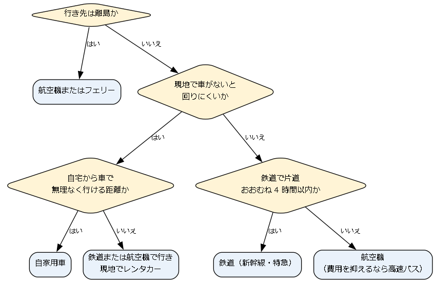

4. 移動手段の手配
移動手段は、所要時間、費用、荷物の量、現地での移動のしやすさを比べて選ぶ。この章では、移動手段の選び方を示した後、手段ごとの予約の方法と注意点を説明する。
4.1. 移動手段の選び方
主な移動手段の特徴を次の表に示す。
移動手段 |
長所 |
短所 |
向いている場面 |
|---|---|---|---|
鉄道 |
時刻が正確で、駅が街の中心にあることが多い。車内で休める。 |
遠距離では航空機より時間がかかる。繁忙期は指定席が取りにくい。 |
都市間の移動、片道おおむね 4 時間以内の移動 |
航空機 |
遠距離を短時間で移動できる。早期に予約すると安くなる。 |
空港までの移動と搭乗手続きに時間がかかる。荷物の制限が厳しい。 |
遠距離の移動、離島への移動 |
高速バス |
運賃が安い。夜行便を使うと宿泊費を 1 泊分減らせる。 |
所要時間が長く、道路の渋滞の影響を受ける。体への負担が大きい。 |
費用を抑えたい移動 |
フェリー |
車ごと乗船できる。船内で休める。 |
所要時間が長く、天候による欠航がある。便数が少ない。 |
離島への移動、車を持って行く長距離の移動 |
自家用車 |
荷物の量を気にせず、時間を自由に使える。 |
運転の負担と渋滞がある。駐車場の確保と料金が必要になる。 |
近距離から中距離の旅行、公共交通の少ない地域を回る旅行 |
レンタカー |
現地で公共交通の少ない場所を自由に回れる。 |
運転免許証が必要で、料金と保険の確認が必要になる。 |
鉄道や航空機で現地に着いた後の移動 |
次の図は、移動手段を選ぶ際の考え方の一例である。所要時間の基準は目安であり、費用や乗り換えの回数も合わせて判断する。

図: 移動手段の選び方の例
4.2. 鉄道
4.2.1. 予約と購入
JR の新幹線や特急列車の指定席は、原則として乗車日の 1 か月前の 10 時に発売が始まる。インターネットの予約サービスには、発売日より前に申込みを受け付けるものもある。主なサービスは次のとおりである。
サービス |
主な対象 |
|---|---|
えきねっと |
JR 東日本、JR 北海道などの新幹線・特急列車 |
スマート EX、エクスプレス予約 |
東海道・山陽・九州新幹線 |
e5489 |
JR 西日本、JR 四国、JR 九州などの新幹線・特急列車 |
JR 九州インターネット列車予約 |
JR 九州の新幹線・特急列車 |
インターネットの予約サービスでは、駅の窓口より安い割引のきっぷを買えることが多い。ただし、割引のきっぷは予約の変更や払い戻しの条件が通常のきっぷより厳しいことがあるため、購入前に条件を確認する。
4.2.2. きっぷの種類
新幹線や特急列車に乗るには、目的地までの乗車券と、新幹線や特急列車に乗るための特急券の 2 つが必要である。特急券には指定席用と自由席用がある。繁忙期には、自由席が混雑したり、全車両が指定席になったりする列車があるため、指定席を予約しておくと安心である。
4.2.3. 大きな荷物
東海道・山陽・九州新幹線では、縦・横・高さの合計が 160 cm を超え 250 cm 以内の荷物を持ち込む場合、特大荷物スペースつき座席の予約が必要である。大きなスーツケースを持って乗る場合は、予約時にこの座席を選ぶ。
4.3. 航空機
4.3.1. 予約と運賃
航空券は、早いものでは搭乗日の約 1 年前から発売される。一般に、早く予約するほど運賃が安く、搭乗日が近づくと高くなる。安い運賃ほど予約の変更ができない、払い戻しの手数料が高いなどの制約がある。
航空会社には、運賃に手荷物の預け入れや座席の指定などのサービスが含まれる大手航空会社と、運賃を安くする代わりにこれらを有料にしているLCCがある。LCC の運賃を比べる際は、手荷物の預け入れや座席の指定の料金を含めた総額で比べる。
4.3.2. 手荷物の制限
手荷物には、機内に持ち込む手荷物と、カウンターで預ける受託手荷物がある。主な制限は次のとおりである。
項目 |
内容 |
|---|---|
機内に持ち込む手荷物 |
大きさと重さに上限がある。大手航空会社では、座席数 100 以上の機材で 3 辺がそれぞれ 55 cm、40 cm、25 cm 以内、重さは身の回り品と合わせて 10 kg までが目安である。LCC では合計 7 kg までなど、より厳しいことが多い。 |
受託手荷物 |
大手航空会社の国内線では、普通席で 1 人 20 kg までは無料であることが多い。LCC では有料であることが多い。 |
持ち込めない物 |
刃物やスプレー缶などは、機内に持ち込めないか、量や種類に制限がある。 |
モバイルバッテリー |
2026 年 4 月 24 日から、機内に持ち込めるのは 1 人 2 個まで（いずれも 160 Wh 以下）となり、機内でモバイルバッテリーを充電することと、モバイルバッテリーから他の機器に給電することができなくなった。預け入れはできない。機内では座席上の収納棚に入れず、状態が見える場所に置く。 |
制限は航空会社によって異なり、変更されることもあるため、搭乗前に利用する航空会社の案内を確認する。
4.3.3. 搭乗の手続き
空港では、保安検査を通過してから搭乗口に向かう。保安検査場の通過には締切時刻があり、大手航空会社の国内線では出発時刻の 20 分前程度、LCC ではこれより早いことがある。混雑する時間帯は保安検査に時間がかかるため、出発の 1 時間前には空港に着くようにする。オンラインチェックインを済ませておくと、カウンターに並ばずに済む。
年齢による割引運賃などを利用する場合は、年齢を確認できる書類の提示を求められることがある。
4.4. 高速バス
高速バスは、インターネットや電話で予約し、座席は予約時に指定されることが多い。夜行便は、到着した日の朝から行動できる一方で、車内で十分に眠れないこともある。到着日の予定は控えめにする。座席の広さや設備は便によって大きく異なるため、長時間乗る場合は、座席の間隔が広い便や 3 列シートの便を選ぶと疲れにくい。
4.5. フェリー
フェリーは、旅客のみで乗る場合と、車ごと乗る場合がある。車ごと乗る場合は、車の長さによって料金が決まるため、予約時に車検証などで車の長さを確認しておく。乗船時には乗船名簿の記入を求められることがある。海が荒れると欠航することがあるため、天候が悪い時期は日程に余裕を持たせる。
4.6. 自家用車
自家用車で旅行する場合は、出発前に次の点を確認する。
タイヤの状態、燃料、エンジンオイルなどの点検
冬に雪の多い地域へ行く場合の冬用タイヤやタイヤチェーン
宿泊施設の駐車場の有無、料金、予約の要否
高速道路の料金と渋滞の予測（繁忙期は出発時刻をずらす）
高速道路では、ETCを使うと料金所を止まらずに通過でき、時間帯や曜日による割引を受けられる場合がある。長時間の運転は事故につながるため、2 時間に 1 回程度を目安に休憩を取る。2 人とも運転できる場合は、交代で運転すると負担を分けられる。
4.7. レンタカー
4.7.1. 予約
レンタカーは、レンタカー会社の公式サイトや予約サイトで予約する。料金は、車の大きさと利用時間で決まる。借りた営業所と違う営業所で返す場合は、乗り捨ての料金がかかることがある。繁忙期や観光地では車が不足しやすいため、交通機関や宿泊施設と合わせて早めに予約する。
4.7.2. 運転免許証
借りる際と運転する際には、運転免許証が必要である。運転する人全員の運転免許証を、受付で提示する。運転免許証の情報をマイナンバーカードに記録したマイナ免許証だけを持っている場合は、受付で対応しているかを予約時にレンタカー会社に確認する。
4.7.3. 補償と保険
レンタカーの料金には、通常、事故に備えた保険・補償が含まれている。ただし、事故を起こした際には、利用者が一部の金額（免責額）を負担する決まりになっていることが多い。この負担を免除するための免責補償制度には、追加料金を払って加入できる。また、事故や故障で車が使えない間の営業損失としてノンオペレーションチャージを請求されることがある。金額は、自走して営業所に戻せる場合に 2 万円程度、戻せない場合に 5 万円程度が目安である。これを補償するオプションを用意している会社もある。
4.7.4. 返却
返却の前に、燃料を満タンにして、その領収書を保管しておく。車内の忘れ物を確認し、返却時刻に遅れないようにする。返却時刻を過ぎると延長料金がかかるため、遅れそうな場合は営業所に連絡する。